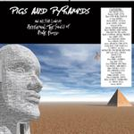

| Artist: | Various Artists |
| Title: | Pigs And Pyramids |
| Label: | Musea FGBG 4461.AR |
| Length(s): | 62 minutes |
| Year(s) of release: | 2002 |
| Month of review: | [11/2002] |
| 1) | Another Brick In The Wall Part 2 | 4.00 |
| 2) | Welcome To The Machine | 7.51 |
| 3) | Comfortably Numb | 6.54 |
| 4) | Shine On You Crazy Diamond | 6.50 |
| 5) | Us And Them | 6.18 |
| 6) | Young Lust | 4.20 |
| 7) | Run Like Hell | 5.09 |
| 8) | Any Colour You Like | 4.13 |
| 9) | Money | 6.06 |
| 10) | Have A Cigar | 5.17 |
| 11) | Breathe (In The Air) | 4.52 |
On Welcome To The Machine we have Doug Pinnick of King's X and Poundhound responsible for the vocals. Contrary to the previous one, this version is less raw than the original. More funky I think and more American sounding. I guess it lacks the power of the original, one of my favourite Floyd tracks in fact, but it does shed some new light on the song.
Comfortably Numb is done by a small Yes line-up, hazy vocals, dreay and intimate. The banjo intermezzo is rather distinctive, the guitar solo, for me at least, lacks the emotion that this song can carry (but even not always in Floyd's renditions).
The blues feel on Shine On You Crazy Diamond is even stronger than on the original. Actually, this version is again quite nice, with a flowery bass.
On Us And Them it is the shrill bass and the powerful harmony vocals that lead the way. Young Lust is a song that I am not so familiar with. A hard bass, a raw guitar sound and a real rocker. But a varied one, fortunately.
On Run Like Hell the maniac vocals of one Jaseon Scheff can be heard. Dweezil, being himself, has to thrown in some citations from other Floyd songs as well. Any Colour You Like is a sizzling jazzrock instrumental. Lots of organ and do I smell a hint of Shine On... here?
I have never been fond of Money (well, okay I do like the lyrics). The sax playing is sharp and the guitar solo thoroughly bluesy.
On Have A Cigar, the vocal tend to be a bit in the line of Spocks Beard. Kimball knows how to let the vocals come over raw and ironic. After a long dreamy intro, the mellow Breathe (In The Air) is the closer of this album.